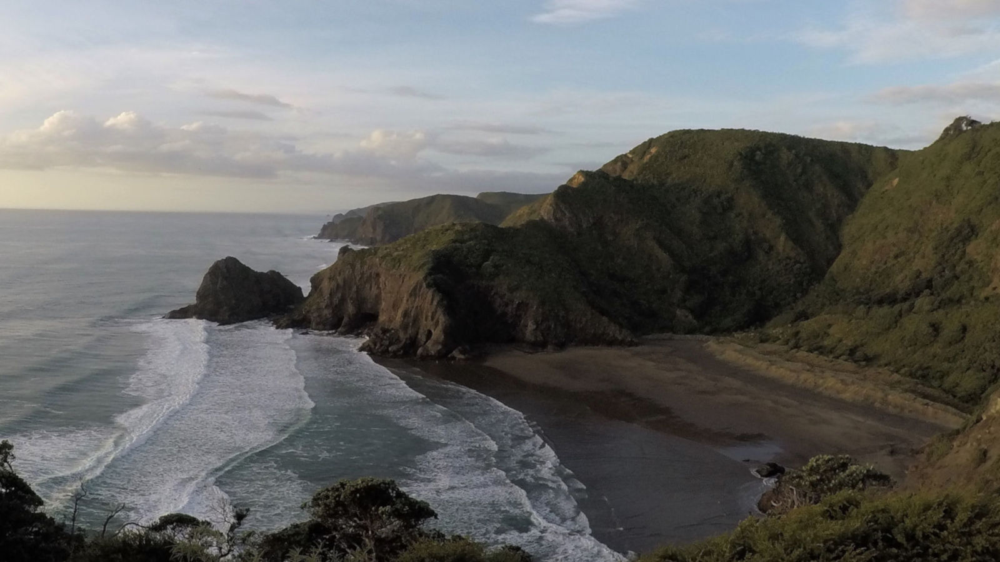
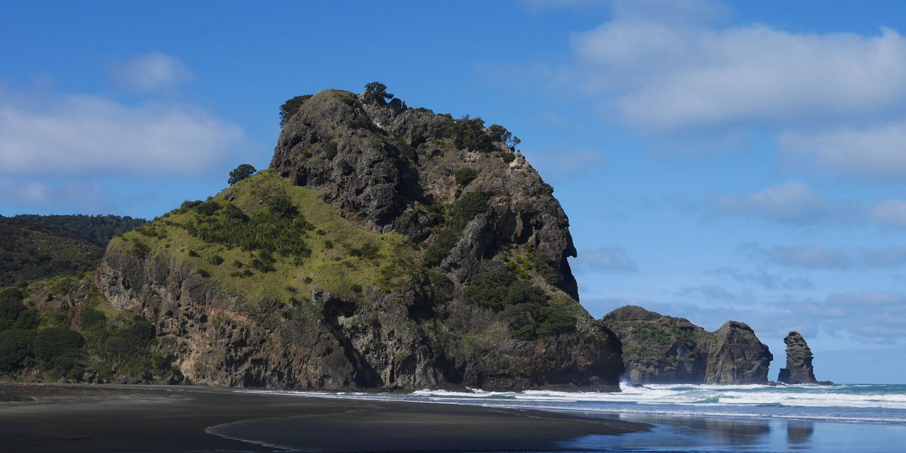

We aim to raise environmental awareness in Piha and progressively establish a network of neighbourhood groups which will rid Piha of predators and weed pests by 2025.
Piha has outstanding scenic and landscape values, including the flora and fauna of the Waitakere Ranges, but native species biodiversity is in decline due to habitat loss and the impacts of human settlement, pest animals, plants and pathogens. Pest Free Piha's aim is to reverse these impacts and restore the biodiversity of the Piha village and catchment.
The values most at risk at Piha include loss of native bush due to invasive weeds; loss of fauna due to pest animals; loss of kauri to dieback disease; sand dune degradation due to pests, including exotic plant colonisation and rabbit browse, as well as trampling; health risks posed by wasps, possums, hedgehogs etc; negative lifestyle impacts of Argentine ants, wasps, rodents and pest plants; and declining asset values due to weed presence generally.

Piha provides a unique example of where being pest free can be achieved at lower cost than elsewhere and can confer greater regional benefits than at other locations. This is because Piha is essentially a small island of high pest indices surrounded by a great area of lower pest indices (the Waitakere Ranges Regional Park) and the Tasman Sea, meaning that currently rats, mice, rabbits, hedgehogs, Argentine ants, wasps and most weeds all tend to radiate out from Piha rather than come in from outside.
Maintenance of pest free borders can therefore be achieved at lower cost than in other locations. Furthermore, any effort at Piha would assist in reducing pest threats to the Park (and their cost), and essentially pilot options for Auckland Council’s (AC) recently declared Pest Free Auckland, establishing a baseline and monitoring and evaluation progress.

Integrated best-practice pest animal and pest plant management programmes implemented to make Piha pest free by 2025
Eradication of new high-threat weeds and fauna as they appear
Cooperating in management of kauri dieback disease to prevent further spread
Eradication of Argentine ants
Successful advocacy to Auckland Council for policies and practices to enhance weed and predator free status and reduce fire risks at Piha
Initial control area expanded from Piha properties to entire Piha catchment (consistent with kauri dieback protocols)
Programme of weed replacement implemented and maintained with native plant species sourced locally
Keeping people and pets safe while at the same time making sure that the impact of domestic cats and dogs on native fauna is minimised
Avoiding erosion on banks by gradual removal of pest weeds and strategically planting native replacements even before removal of invasive weeds where this is possible
We help get volunteer groups set up in every neighbourhood to tackle both weed pests and predators.
There are several community-led efforts in Piha – the weed groups that begun in Rayner, Garden and Beach Valley roads; the dune restoration by Piha CoastCare; the predator control at Te Waha protecting the grey-faced petrels in their burrows; the Our Backyard Piha Project tackling climbing asparagus; the volunteers helping the rangers each week; our dotterel minders and the many individuals already dealing with pest weeds on their properties and undertaking rat and possum control.
Pest Free Piha aims to bring all this effort together in a more organised and strategic approach.
Keen to make Piha a better place? Fill the form below or visit our Facebook page.
{kind=link}
{kind=link}
{kind=link}
{kind=link}
{kind=link}
{kind=link}